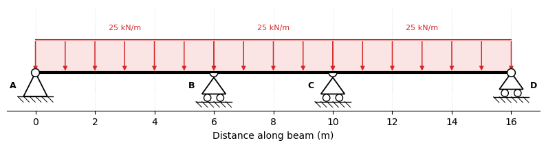
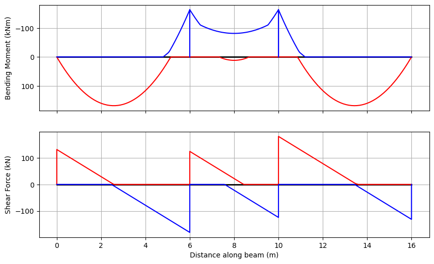
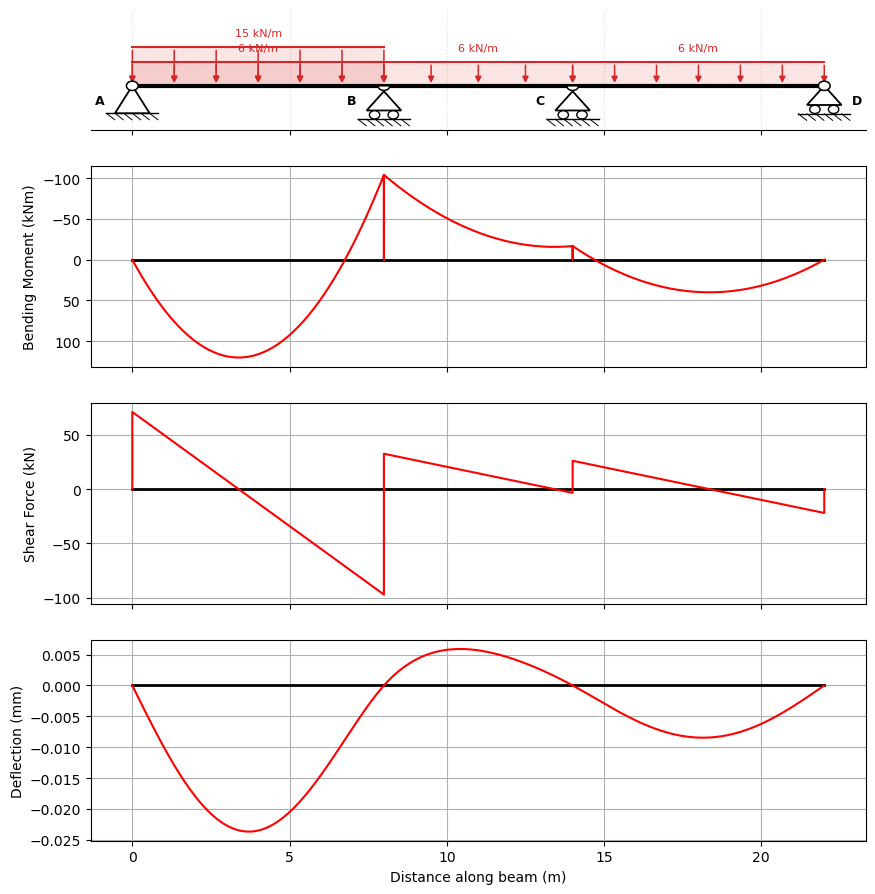
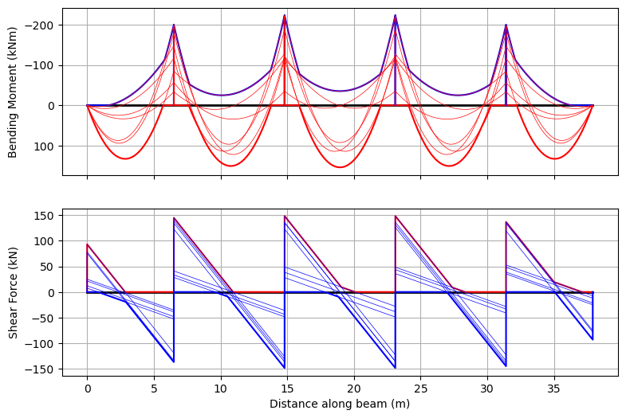
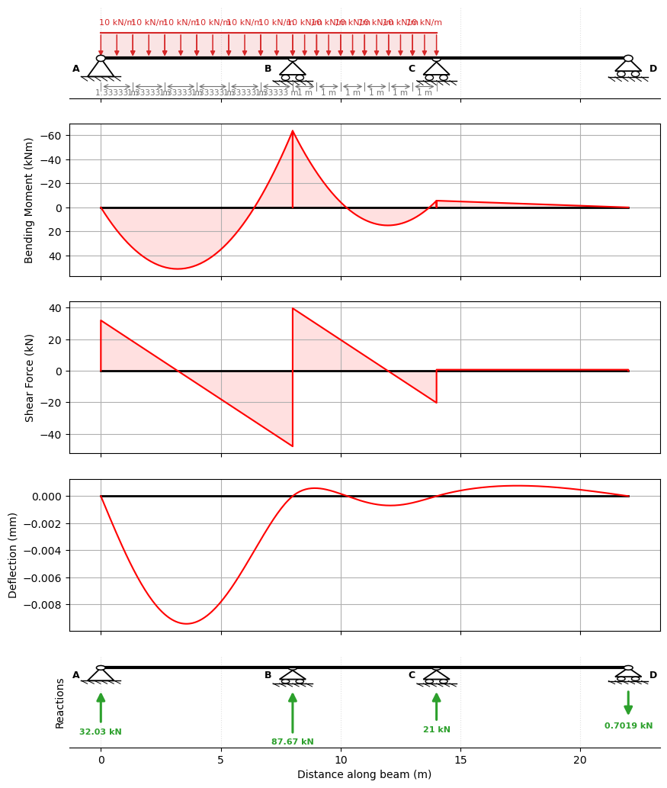
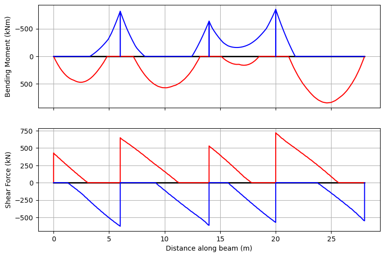
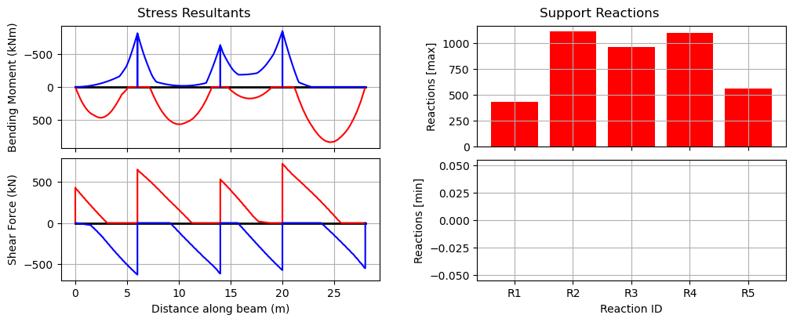

Load Cases, Load Patterning & Design Envelopes#
In design, the beam effects we check are usually produced by combinations of named actions: permanent load, imposed or traffic load, temperature, settlement, and so on. Each action may have its own partial factor, and variable actions may need to be placed on selected spans to find the worst bending moments, shears, or reactions.
This tutorial shows two PyCBA tools for that workflow. LoadCases is used when you want to name the actions and form an explicit combination such as 1.4G + 1.6Q. LoadPattern is used when live or traffic load must be applied to some spans and omitted or reduced on others before taking the maximum and minimum envelope.
Design-code link. Structural design codes (for example Eurocode, AS/NZS, ACI or bridge codes) specify action categories, partial factors, combination equations and patterning rules. PyCBA does not choose a design code for you; instead, you translate the relevant code clauses into named load cases, factor maps such as {"Gk": 1.4, "Qk": 1.6}, and LoadPattern max/min factors, then use PyCBA to analyse and envelope the resulting cases.
[1]:
import pycba as cba
import numpy as np
import matplotlib.pyplot as plt
Example 1: Hulse & Mosley#
Here we consider a 3-span beam from Hulse & Mosley, Reinforced Concrete Design By Computer (1986) which uses the load pattern from the (now superseded) British Standards:
MAX = 1.4 Gk + 1.6 Qk
MIN = 1.0 Gk The beam is subjected to nominal dead and live UDLs of \(w_g = 25\) kN/m and \(w_q = 10\) kN/m respectively.
First establish the beam as usual:
[2]:
L = [6,4,6]
EI = 30 * 10e9 * 1e-6
R = [-1,0,-1,0,-1,0,-1,0]
beam_analysis = cba.BeamAnalysis(L, EI, R)
Now create named load cases for the permanent and variable UDLs. The high-level builders use the same one-based span numbers as BeamAnalysis, but avoid writing raw load-matrix rows in the main workflow.
[3]:
load_cases = cba.LoadCases(beam_analysis)
Gk = load_cases.add_case("Gk")
Qk = load_cases.add_case("Qk")
for i_span in range(1, beam_analysis.beam.no_spans + 1):
Gk.add_udl(i_span, 25)
Qk.add_udl(i_span, 10)
We can also visualise the beam together with one of its load cases — here the permanent action Gk — by passing the case straight to plot():
[4]:
beam_analysis.plot_beam(Gk);

The collection now contains two named actions:
[4]:
load_cases.names
[4]:
('Gk', 'Qk')
Explicit load-case combinations#
Before applying patterning, it is often useful to make the code combination explicit. In this example the code-style ultimate combination is 1.4 Gk + 1.6 Qk, while the minimum patterning case is 1.0 Gk. A factor map such as {"Gk": 1.4, "Qk": 1.6} gives a transparent linear response combination.
LoadCases keeps the named actions and combines them with explicit factors. LoadPattern, used next, takes those same named actions and generates the span arrangements needed for the design envelope. If you already have a low-level PyCBA load matrix, load_cases.add("name", LM) is still available; the examples below prefer the high-level builders.
[5]:
γg_max = 1.4
γg_min = 1.0
γq_max = 1.6
γq_min = 0.0
[6]:
x, M_uls = load_cases.combine({"Gk": γg_max, "Qk": γq_max}, response="M")
M_uls.shape
[6]:
(309,)
Now create the LoadPattern object from the same named LoadCase objects. The maximum and minimum factors tell PyCBA how each action is factored when a span is loaded or unloaded. PyCBA then generates the adjacent-span, alternate-span and all-span arrangements and envelopes the resulting analyses.
[7]:
lp = cba.LoadPattern(beam_analysis)
lp.set_dead_loads(Gk, γg_max, γg_min)
lp.set_live_loads(Qk, γq_max, γq_min)
pattern_cases = lp.to_load_cases()
pattern_cases.names
[7]:
('Max hogging spans 1-2',
'Max hogging spans 2-3',
'Max odd spans',
'Max even spans',
'All spans max')
For debugging, LoadPattern can also return the exact factored LM used for each generated analysis. The dictionary keys are the generated pattern names:
[8]:
pattern_LM = lp.to_LM()
pattern_LM["Max odd spans"]
[8]:
[[1, 1, 35.0],
[2, 1, 25.0],
[3, 1, 35.0],
[1, 1, 16.0],
[2, 1, 0.0],
[3, 1, 16.0]]
The generated pattern cases are ordinary LoadCase objects, so a single generated case can be inspected by index when checking a particular arrangement.
[9]:
pattern_cases[2].name, pattern_cases[2].to_LM()
[9]:
('Max odd spans',
[[1, 1, 35.0],
[2, 1, 25.0],
[3, 1, 35.0],
[1, 1, 16.0],
[2, 1, 0.0],
[3, 1, 16.0]])
[10]:
env = lp.analyze()
env.plot(figsize=(9,6));

And let’s confirm that the results match the book (Section 2.3.6) to the second decimal place (atol=1e-2). To do this, we find the results from our analysis for key locations for moments and shears and confirm they match the book. First, the moments:
[11]:
m_locs = np.array([3, 6, 8, 10, 13])
idx = [(np.abs(env.x - x)).argmin() for x in m_locs]
mmx = np.allclose(env.Mmax[idx],np.array([163.79, 0, 11.75, 0, 163.79]),atol=1e-2)
mmn = np.allclose(env.Mmin[idx],np.array([0, -163.38, -81.42, -163.38, 0]),atol=1e-2)
print(mmx,mmn)
True True
Shear needs one extra bookkeeping step. PyCBA stores n+3 shear ordinates per span because duplicated points are used to close the shear-force diagram at jumps. For comparison with the book, take the maximum and minimum within each span, excluding those duplicated end points.
[12]:
n = beam_analysis.beam_results.npts
nspans = beam_analysis.beam.no_spans
Vmax = np.array([np.max(env.Vmax[i*(n+3):(i+1)*(n+3)]) for i in range(nspans)])
vmx = np.allclose(Vmax,np.array([131.1, 123.94, 180.23]),atol=1e-2)
Vmin = np.array([np.min(env.Vmin[i*(n+3):(i+1)*(n+3)]) for i in range(nspans)])
vmn = np.allclose(Vmin,np.array([-180.23, -123.94, -131.10]),atol=1e-2)
print(vmx,vmn)
True True
Example 2: Mixed Load Cases and Factor Combinations#
The first example used full-span UDLs for both permanent and variable actions. A named load case can also contain any normal PyCBA load rows. This example keeps the same workflow while mixing a permanent UDL case with three variable cases: a left-span UDL, a centre-span point load, and a right-span partial UDL.
[13]:
mixed_beam = cba.BeamAnalysis(
L=[8.0, 6.0, 8.0],
EI=30e6,
R=[-1, 0, -1, 0, -1, 0, -1, 0],
)
mixed_cases = cba.LoadCases(mixed_beam)
mixed_cases.add_case("G").add_udl(1, 5.0).add_udl(2, 5.0).add_udl(3, 5.0)
mixed_cases.add_udl("Q_left", 1, 10.0)
mixed_cases.add_pl("Q_centre", 2, 25.0, 3.0)
mixed_cases.add_pudl("Q_right", 3, 8.0, 1.5, 4.0)
mixed_cases.names
[13]:
('G', 'Q_left', 'Q_centre', 'Q_right')
For debugging, the response matrix has one row per named load case and one column per global station along the beam. The load matrices can also be inspected directly by name.
[14]:
x_mixed, M_mixed = mixed_cases.response_matrix(response="M")
M_mixed.shape
[14]:
(4, 309)
[15]:
mixed_cases.to_LM()["Q_right"]
[15]:
[[3, 3, 8.0, 1.5, 4.0]]
A mapping from case names to factors is usually clearer than a raw factor matrix. Cases that are not named in the mapping receive a zero factor.
[16]:
mixed_factors = {"G": 1.2, "Q_left": 1.5}
x_mixed, M_G_plus_Q_left = mixed_cases.combine(mixed_factors, response="M")
M_G_plus_Q_left.shape
[16]:
(309,)
When you want to plot a single factored combination, analyse it as a normal BeamAnalysis. That uses the usual PyCBA plotting convention, including the inverted bending-moment axis.
[17]:
mixed_analysis = mixed_cases.analyze_combination(mixed_factors)
mixed_analysis.plot_results();

Example 3: Patterned UDL Target Combination#
A bridge or floor load may be specified as a UDL that can occupy only the parts of the structure that make a particular effect worse. Instead of guessing that loaded length by hand, PyCBA can divide each span into short partial-UDL segments and analyse each segment as a basis LoadCase over the whole beam.
For a selected target effect, such as hogging at the first internal support, the segment responses are then inspected at that target coordinate. Segments that contribute adversely are included in a LoadCombination; segments that relieve the effect are left out. The resulting combination is one load arrangement for that target effect, and it can be converted back to an ordinary PyCBA load matrix for checking.
The number of basis cases is n_spans * n_segments. Increasing n_segments gives a finer approximation to the possible loaded length, while reducing it gives a quicker, coarser check.
[18]:
n_segments = 6
udl_basis = cba.make_patterned_udl(mixed_beam, w=10.0, n_segments=n_segments)
len(udl_basis), udl_basis.names[:3], udl_basis.names[-1]
[18]:
(18,
('UDL span 1 segment 1', 'UDL span 1 segment 2', 'UDL span 1 segment 3'),
'UDL span 3 segment 6')
Here the target is the bending moment at the first internal support. sense="min" selects the segments with negative moment contribution at that coordinate. The result is a LoadCombination, not a new primitive load case.
This is related to Kadane’s maximum-subarray algorithm. With independently selectable segments, the selected combination simply includes every segment with an adverse contribution. If a loading rule requires one contiguous loaded length, the same segment response vector can be searched with a Kadane-style contiguous subarray step before forming the LoadCombination.
[19]:
x_support_1 = mixed_beam.beam.mbr_lengths[0]
hogging_support_1 = udl_basis.target_combination(
"Hogging at first internal support",
x=x_support_1,
sense="min",
response="M",
)
n_selected = int(hogging_support_1.factor_vector(udl_basis).sum())
hogging_support_1.name, n_selected
[19]:
('Hogging at first internal support', 12)
The combination can be materialised as a PyCBA load matrix for checking or for a single ordinary analysis.
[20]:
hogging_LM = hogging_support_1.to_LM(udl_basis)
hogging_LM[:5]
[20]:
[[1, 3, 10.0, 0.0, 1.3333333333333333],
[1, 3, 10.0, 1.3333333333333333, 1.3333333333333333],
[1, 3, 10.0, 2.6666666666666665, 1.3333333333333333],
[1, 3, 10.0, 4.0, 1.3333333333333333],
[1, 3, 10.0, 5.333333333333333, 1.3333333333333333]]
[21]:
hogging_case = hogging_support_1.to_load_case(udl_basis)
fig, ax = cba.plot_load_patterns(mixed_beam, [hogging_case], show=False)
ax.set_xlim(0.0, sum(mixed_beam.beam.mbr_lengths))
plt.show()

[22]:
hogging_analysis = hogging_support_1.analyze(udl_basis)
hogging_analysis.plot_results();

Example 4: 5-span Beam#
In this example we use Eurocode load factors for which the load pattern is
MAX = 1.35 Gk + 1.5Qk
MIN = 0.9 Gk
Make the beam as before:
[23]:
L = [6.5,8.3,8.3,8.3,6.5]
EI = 30 * 10e9 * 1e-6
R = [-1,0,-1,0,-1,0,-1,0,-1,0,-1,0]
beam_analysis = cba.BeamAnalysis(L, EI, R)
Define the named loads using the same high-level UDL builder:
[24]:
load_cases = cba.LoadCases(beam_analysis)
Gk = load_cases.add_case("Gk")
Qk = load_cases.add_case("Qk")
for i_span in range(1, beam_analysis.beam.no_spans + 1):
Gk.add_udl(i_span, 10.3)
Qk.add_udl(i_span, 12.5)
[25]:
γg_max = 1.35
γg_min = 0.9
γq_max = 1.5
γq_min = 0.0
Now pass those named cases to LoadPattern. Here npts=200 asks PyCBA to calculate the envelope at 200 stations along each span.
[26]:
lp = cba.LoadPattern(beam_analysis)
lp.set_dead_loads(Gk, γg_max, γg_min)
lp.set_live_loads(Qk, γq_max, γq_min)
env = lp.analyze(npts=200)
env.plot(figsize=(9,6));

We can also choose to plot each bending moment and shear force diagram in the envelope:
[27]:
env.plot(each=True,figsize=(9,6));

Example 5: 4-Span Beam#
Here we consider a 4-span beam subject to nominal dead and live UDLs of \(w_g = 20\) kN/m and \(w_q = 30\) kN/m respectively. Here we use a modified load pattern from the old British Standards, conservatively allowing dead load to be less than the nominal estimate:
MAX = 1.4 Gk + 1.6 Qk
MIN = 0.9 Gk
[28]:
L = [6,8,6,8]
EI = 30 * 10e9 * 1e-6
R = [-1,0,-1,0,-1,0,-1,0,-1,0]
beam_analysis = cba.BeamAnalysis(L, EI, R)
[29]:
load_cases = cba.LoadCases(beam_analysis)
Gk = load_cases.add_case("Gk")
Qk = load_cases.add_case("Qk")
for i_span in range(1, beam_analysis.beam.no_spans + 1):
Gk.add_udl(i_span, 20)
Qk.add_udl(i_span, 30)
[30]:
γg_max = 1.4
γg_min = 0.9
γq_max = 1.6
γq_min = 0.0
[31]:
lp = cba.LoadPattern(beam_analysis)
lp.set_dead_loads(Gk, γg_max, γg_min)
lp.set_live_loads(Qk, γq_max, γq_min)
env_udl = lp.analyze()
env_udl.plot(figsize=(9,6));

Example 6: Augmenting Envelopes#
Here we augment an envelope due to a moving vehicle to the 4-span beam just considered, illustrating that mixed analyses are possible.
The vehicle used is from the Australian bridge design standard, AS5100.2, M1600, with a 6.25~m axle spacing.
[32]:
vehicle = cba.VehicleLibrary.get_m1600(6.25)
bridge_analysis = cba.BridgeAnalysis(beam_analysis, vehicle)
env_veh = bridge_analysis.run_vehicle(0.1)
env_veh.plot(figsize=(9,6));

Next, establish the envelope of envelopes, and augment both in, then plot:
[33]:
envenv = cba.Envelopes.zero_like(env_udl)
envenv.augment(env_udl)
envenv.augment(env_veh)
bridge_analysis.plot_envelopes(envenv)
